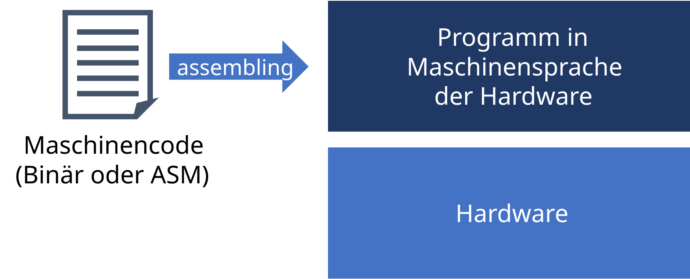
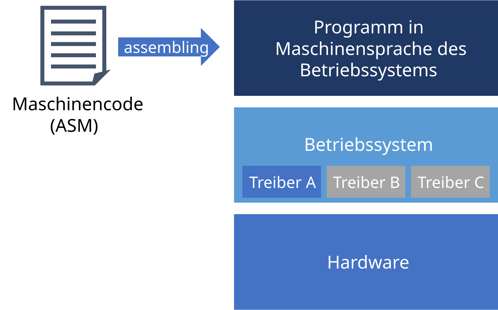
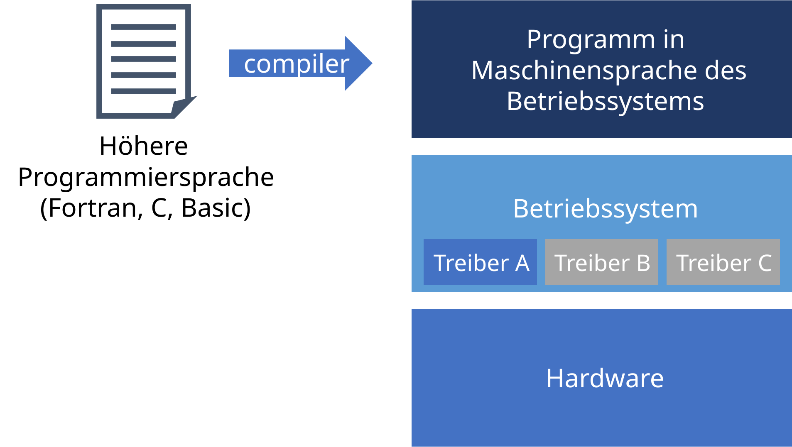
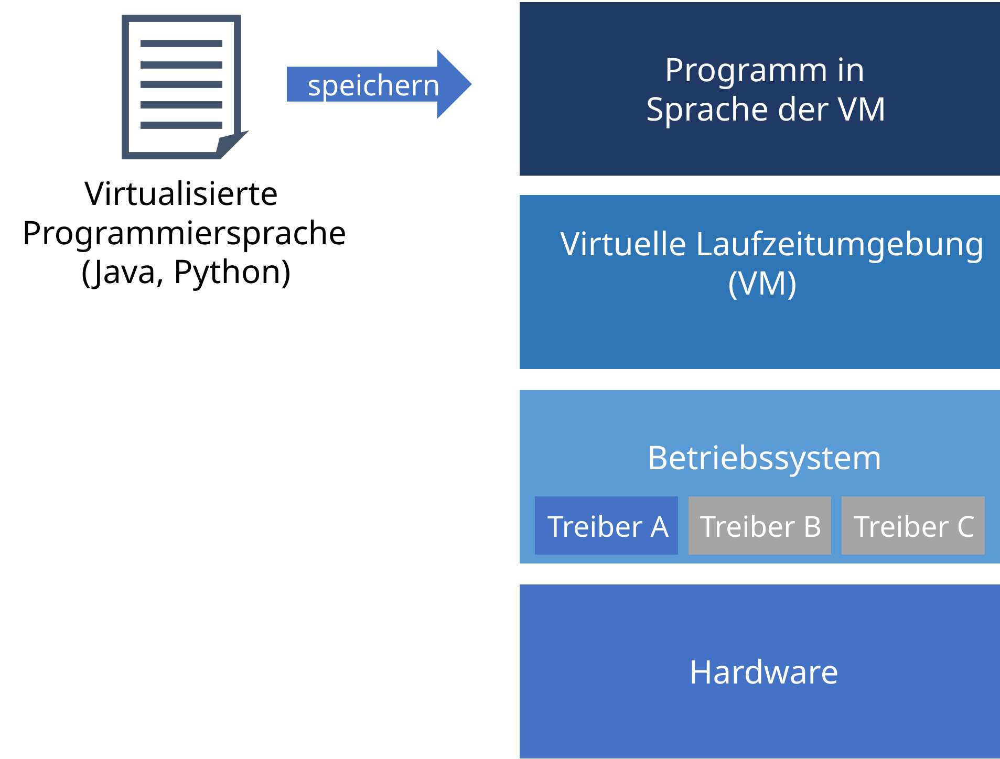
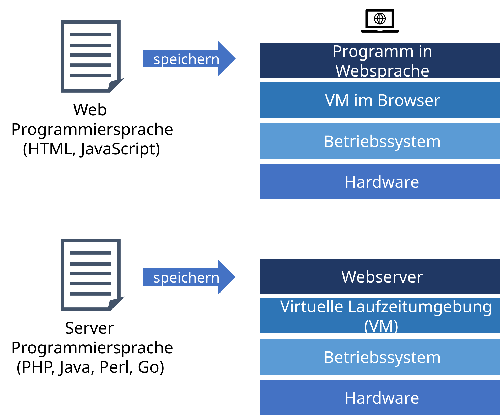
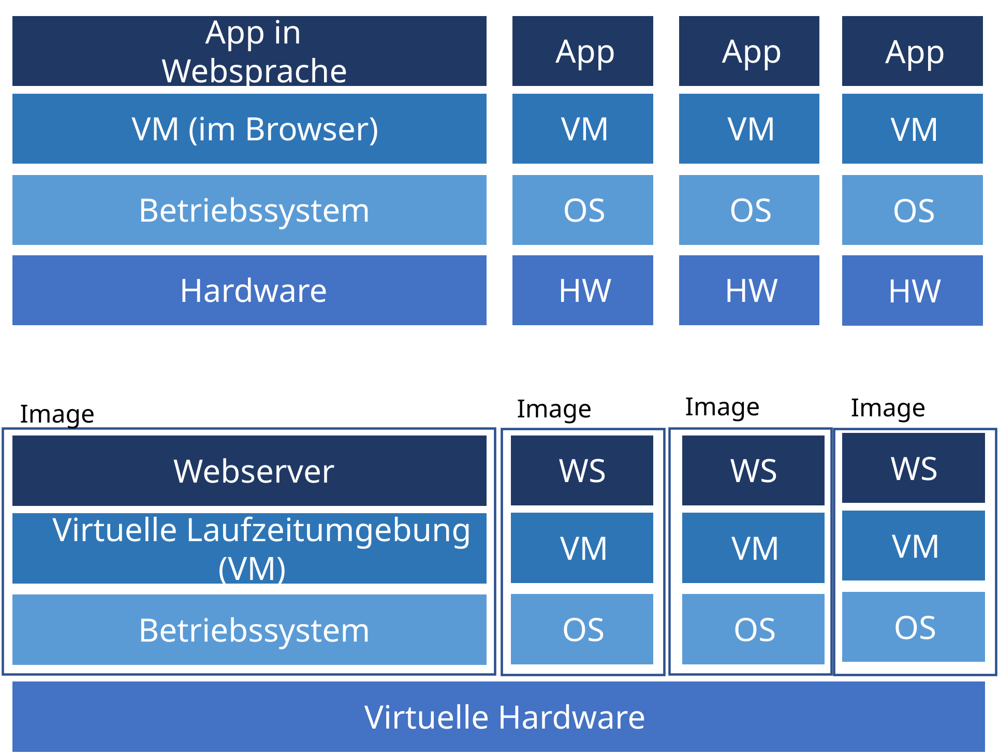
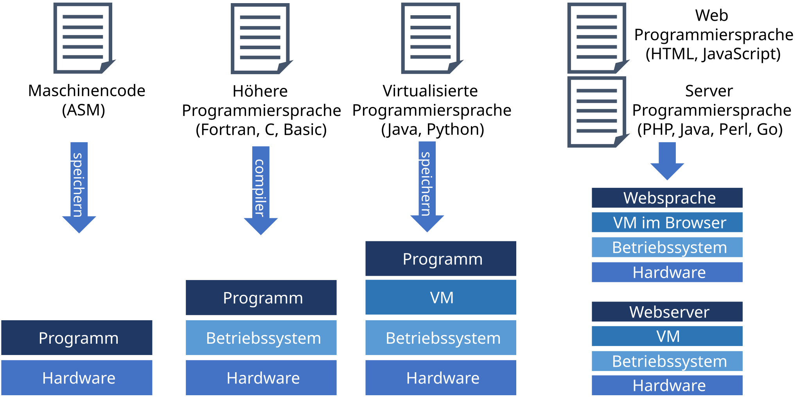

Softwarearchitektur
Good architecture is not just about structure - it’s about intention. In code as in buildings, clarity and purpose leave the longest legacy
— Louis Kahn
Warum Architektur vor Code steht
Die Geschichte der Softwarearchitektur ist keine neutrale Chronologie von Erfindungen. Sie ist eine Abfolge von Systemen, die an den Grenzen ihrer eigenen Architektur gescheitert sind — und von Antworten, die immer architektonisch, nie nur algorithmisch waren.
Jede Ära zeigt dasselbe Muster: Anforderungen wachsen über die bestehende Architektur hinaus. Die Lösung war nie „besserer Code innerhalb des alten Systems”. Die Lösung war eine neue Architektursicht, die neue Komponentenbeziehungen schafft. Die Informationsschicht der Wissenspyramide (→ 02a_Wissenspyramide) entspricht dieser Architekturebene.
Konsequenz für heute: Auch KI-generierter Code kann nur so gut sein wie die Architektur, die ihn rahmt. Die Grenze, die im Prompt gesetzt wird, ist bereits eine Architekturentscheidung.
Monolithische, maschinennahe Software vor 1950
Über die Jahre haben sich die Softwarearchitekturen den modernen Anforderungen angepasst. Dadurch haben sich auch neue Programmiersprachen und Softwarearchitekturen entwickelt. Die ersten Programme wurden direkt in binären Maschinencode geschrieben. Dieser wurde mit speziellen Maschinen programmiert, die direkt mit der Hardware kommunizierten. Die Software war monolithisch, d.h. es gab keine Trennung von Funktionalitäten. Alle Funktionen waren in einem einzigen Programm vereint. Diese Software war eng an die Hardware gebunden, was bedeutete, dass sie nur auf einer bestimmten Hardwareplattform lief.
Problem: Dabei entstand das Problem, dass Programme für neue Hardware meist komplett neu geschrieben oder stark angepasst werden mussten.

Aufteilung in Betriebssysteme und monolithische Software ab ca. 1960
Betriebssysteme wurden eingeführt, um Standardaufgaben zu erfüllen (Dateiverwaltung, Speichermanagement, Anzeige, etc.) und die Hardware zu abstrahieren. Dies geschieht durch hardwarespezifische Treiber. Dadurch muss bei neuer Hardware nur der Treiber ausgewechselt werden, welcher die gleichen Funktionen wie der alte Treiber bietet. Das Programm muss nicht angepasst werden.
Problem: Die Programme sind sehr schwer zu schreiben, weil sie sehr gutes Verständnis der Hardware, der Treiber und der Betriebssystemfunktionen erfordern. Sie sind sehr low-level und bieten wenig Abstraktion.

Entwicklung höherer Programmiersprachen ab ca. 1970
Um die Programmierung zu vereinfachen, wurden höhere Programmiersprachen eingeführt, die ‘natürlichsprachlichere’ Befehle benutzen. Sie müssen mit Compilern oder Interpretern in Maschinensprache übersetzt werden. Diese ist allerdings spezifisch für das Betriebssystem und die genutzten Treiber, um deren spezifische Funktionen anzusprechen. Das bedeutet, dass Programme, die für ein bestimmtes Betriebssystem und Treiber geschrieben wurden, nicht ohne Weiteres auf einem anderen Betriebssystem laufen können.
Problem: Wenn sich die Betriebssysteme ändern, so funktionieren Programme nicht und müssen entweder neu Kompiliert werden oder umgeschrieben werden.

Virtualisierung monolithischer Software ab ca. 1995
Um die Abhängigkeit von Betriebssystemen zu verringern, wurden virtuelle Laufzeitumgebungen eingeführt. Diese abstrahieren die Betriebssysteme und ermöglichen es, Code in Echtzeit zu kompilieren (z.B. Java) oder ihn zu interpretieren (z.B. Python). Dadurch können Programme auf verschiedenen Betriebssystemen laufen, ohne dass sie neu geschrieben werden müssen.
Dadurch wurde es auch einfacher, neue Betriebssysteme zu entwickeln, weshalb auch Android und iOS für mobile Geräte entstanden sind, die Virtualisierung stark nutzen.
Problem: Mit dem Internet entwickelte sich der Bedarf nicht nur Text und Bilder zu teilen, sondern auch Inhalte auf Webseiten dynamisch anzupassen und kleinere (bis größere) Programme auszuführen. Um von verschiedenen Geräten auf die Daten zuzugreifen, braucht man einen zentralen Punkt um die Daten zu speichern und komplexere Berechnungen auszuführen.

Verteilte, virtualisierte Software im Internet ab ca. 2000
Im Internet funktionierten traditionelle monolithische Softwareanwendungen, die auf einem einzelnen Computer liefen, nicht mehr gut. Es stieg der Bedarf an Anwendungen, die auf mehreren, zum Teil mobilen Geräten laufen und gleiche Daten verwenden können. Hierfür wurde verteilte Softwarearchitektur entwickelt.
Diese Architektur trennt die Frontend-Anwendungen von den Backend-Servern. Die Frontend-Anwendungen sind für die Darstellung der Inhalte und die Interaktion mit den Nutzern zuständig, während die Backend-Server die Webseiten bereitstellen und die Langzeitdaten in Datenbanken verwalten. Diese Trennung ermöglicht es, dass Frontend-Anwendungen (Webseiten oder Apps) die Inhalte visualisieren und mit den Nutzern interagieren können, ohne dass sie direkt auf die Datenbanken zugreifen müssen.
Problem: Im Internet greifen oft sehr viele Nutzer gleichzeitig auf die gleichen Server (Seiten) zu. Um diese nicht zu überlasten, brauchte man Wege diese bei Bedarf schnell zu duplizieren. Mit der Entwicklung von mobilen Geräten (Smart Phones, Tablets, etc.) gab es immer mehr relativ kleine spezialisierte Anwendungen (Apps) Hier kann der Bedarf an Rechenkapazitäten dynamisch schnell wachsen und man benötigte auch dynamisch skallierbare Server.

Verteilte, virtualisierte Apps und Cloud-Software ab ca. 2010
Apps und Websites lösen traditionelle monolithische Programme weitgehend ab. Sie laufen nicht mehr vollständig auf einem einzigen Computer, sondern haben Benutzeroberflächen auf mobilen Geräten und Daten in der Cloud. Das erfordert, die Skalierbarkeit und Flexibilität von Internetanwendungen zu verbessern, damit auf hohes Nutzeraufkommen schnell reagiert werden kann. Um Webserver und Berechnungen in der Cloud besser zu skalieren, bündelt man Programme mit dem Betriebssystem in Images und virtualisiert Hardware. Dadurch lassen sich Programme mit dem kompletten Betriebssystem sehr schnell auf viele Rechner verteilen.
Problem: Die resultierenden modernen verteilten Anwendungen weisen eine sehr hohe Komplexität auf. Es gibt viele spezialisierte Programmiersprachen und Teilarchitekturen, um einzelne Probleme darin zu lösen.

Klassifikation der Programmiersprachen nach historischer Anwendung
Die Programmiersprachen haben sich entsprechend den Architekturen auch mit der Zeit entwickelt. Deshalb änderten sich auch über die Zeit die beliebten Programmiersprachen.

Architektur im agentischen Zeitalter
KI generiert Komponenten — Ingenieure entscheiden Architektur
KI kann eine Funktion, eine Klasse oder ein Modul generieren. Was sie nicht generieren kann, sind die Beziehungen zwischen Komponenten . Das ist die Aufgabe der Ingenieure.
Die Geschichte der Softwarearchitektur zeigt: Architekturentscheidungen überdauern den individuellen Code. Programme werden neu geschrieben — Architekturen bleiben. Genau deshalb ist die Entscheidung, welche Komponenten ein System hat und wie sie zusammenarbeiten, nicht delegierbar.
Für die Praxis mit KI-Tools: Claude Code generiert Code innerhalb der Grenzen, die im Prompt gesetzt werden. Die Frage, welche Grenzen das sind, ist bereits eine Architekturentscheidung.
Was KI generiert: Funktionen, Klassen, Module, Algorithmen.
Was der Ingenieur entscheidet:
- Welche Komponenten gibt es?
- Welche Grenzen hat jede Komponente?
- Wie kommunizieren sie miteinander?
- Wer trägt welche Verantwortung?
Prompt-Grenzen sind Architekturgrenzen
Wenn wir Claude Code bitten, „eine Funktion zu schreiben, die Sensordaten liest und eine Warnung ausgibt”, treffen wir eine Architekturentscheidung: Lesen und Warnen sind in einer Komponente. Das kann richtig oder falsch sein — aber es ist eine Entscheidung mit langfristigen Konsequenzen.
Architektur ist nicht das, was nach dem Programmieren entsteht. Architektur ist das, was vor dem Prompt entschieden wird.
Verbindung zu dieser Session:
- →
03c_Softwareentwurf: Prozessmodelle und UML sind die Werkzeuge, um Architekturen zu entwerfen, bevor ein Prompt geschrieben wird.
Vor dem ersten Prompt:
- Welche Komponenten brauche ich?
- Welche Grenzen soll jede Komponente haben?
- Wie kommunizieren sie miteinander?
- Dann jede Komponente separat generieren lassen.